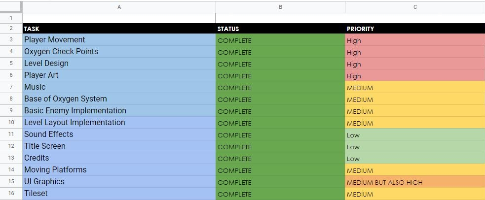
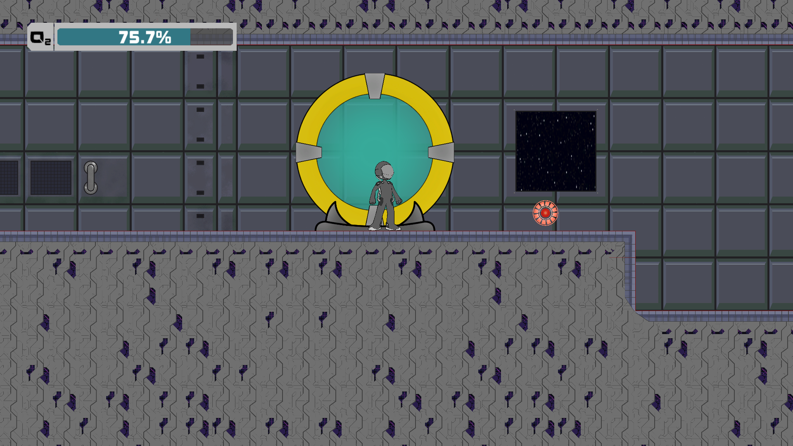

Emergency in Section C
Roles:
Duration:
1 Week (May 2 2021 - May 9 2021)
Tools Used:
Unity, C#, Github
Collaborators:
- Herman Chan - Level Designer, Gameplay Designer
- Benedict Wong - Gameplay Designer, Programmer
- Jonathan Newman - Character Developer, Sound Design, Music
- Alen Pontejos - Lead Artist
- Stratos Argentius - Background Artist
Project Summary:
Emergency in Section C is a platformer that was made for the May Day Make-A-Level game jam that was hosted on itch.io based around the theme of “Emergency”. In the game you play as an astronaut that must escape the exploding space station by parkouring through complex corridors in an attempt to make it to the escape shuttle.
This was my first game jam project and so I tried to focus on creating a smooth development process by setting a clear but flexible structure the project should follow and by creating understandable code for the level designer to construct the level with.
Project Lead:
Everyone on the team drafted ideas together on a document and we began to create a schedule using Google spreadsheets. We listed out tasks for the game, assigning due dates, priority levels and people to them.
The first of the tasks was making sure Github was ready to use, as most of us had no experience with it, I delegated the task to our team member with the greatest level of understanding to teach us the basics.
I made myself available as much as I could ready to take on any questions anyone might have whilst also working on programming myself.
For the duration of the project, I was readily available in a discord voice channel whenever the team needed me. I would stay there from 9 AM to roughly 6 PM before I checked off for the day, however if questions were asked past that time I would try my best to answer them.
We did end up having a miscommunication on the look of the game and that resulted in us stressing out our artist as they still had so much left to do but so little time. Ultimately I recognize the miscommunication as my own failure as I should have checked in between the level designer and artist to make sure they were communicating. Thus as a result, I recruited a second artist to lighten the load off the first one and have the second artist do the finishing touches.
Programmer:
My other job was doing basic object interactions, so that includes the altering of states for switches, programming the check points so that when a player dies they respawn there, the oxygen pickups to restore oxygen levels to the player as the game used decreasing oxygen as a timer try to speed them through the level.
I also programmed the moving platforms so that our level designer could create easy pathways for them to follow, allowing for more interesting dynamics for our level design.

However those screenshots were only the final product. The project wouldn’t be what it is without the iterative process that we took. Specifically focusing on my part in that process I had to consider what was a fair amount of oxygen for the player to have restored by the oxygen tanks. If I restored too much, the sense of urgency the game was meant to inspire is now gone, hurting the emotions it was meant to invoke, if I restored too little, the tanks wouldn’t be worth it, making their existence pointless. So I needed data and what better way than to check how much oxygen I had left at each checkpoint.
Based on my own playtests and some I had others do, I determined that giving the player around 5% of their total oxygen was enough that the player might be interested in an oxygen tank but not enough that it takes away the sense of urgency. I had to be cautious to not let mechanics of the game interfere with the aesthetics through the dynamics.
Reflection:
Although I was not perfect at my role as project lead, I felt like I was able to salvage the situation and it taught me a lot about the importance of keeping not just myself in contact with the other sections of the project but also themselves as well.